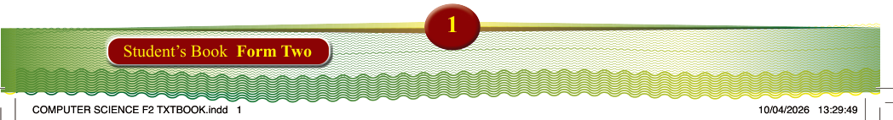
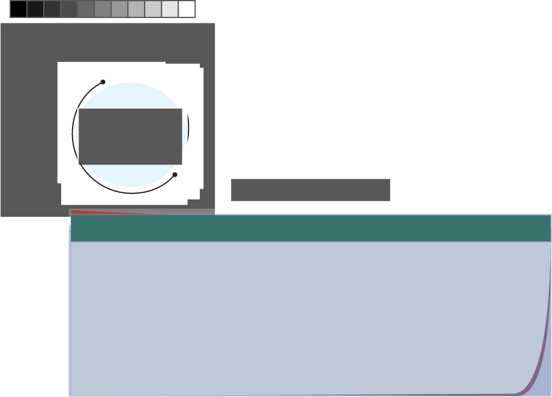
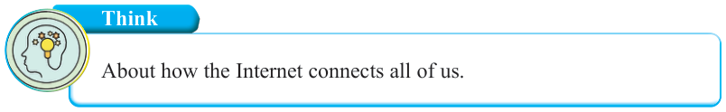
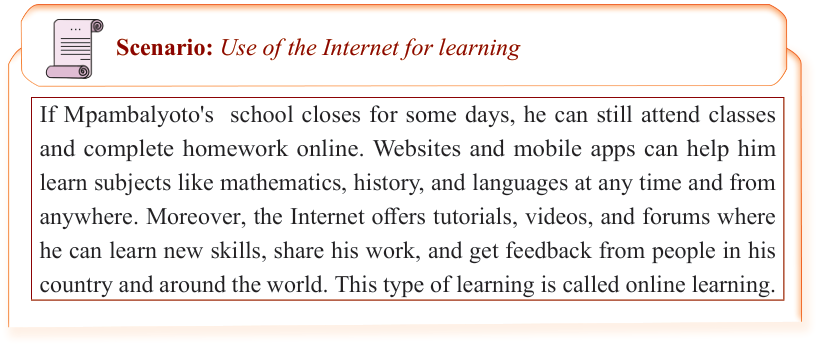

Chapter
One
The Internet
Introduction
We live in a connected world where people can instantly exchange information, access resources, and share computing services. This is made possible by the
Internet. In this chapter, you will learn the concept of the Internet, basic Internet related concepts, Internet connectivity, Internet services and applications, and ethical and responsible use of the Internet. The competencies developed will enable you to use Internet resources more effectively and responsibly.

Think
About how the Internet connects all of us.
The concept of the Internet

Scenario: Use of the Internet for learning
If Mpambalyoto's school closes for some days, he can still attend classes
and complete homework online. Websites and mobile apps can help him
learn subjects like mathematics, history, and languages at any time and from anywhere. Moreover, the Internet offers tutorials, videos, and forums where he can learn new skills, share his work, and get feedback from people in his country and around the world. This type of learning is called online learning.